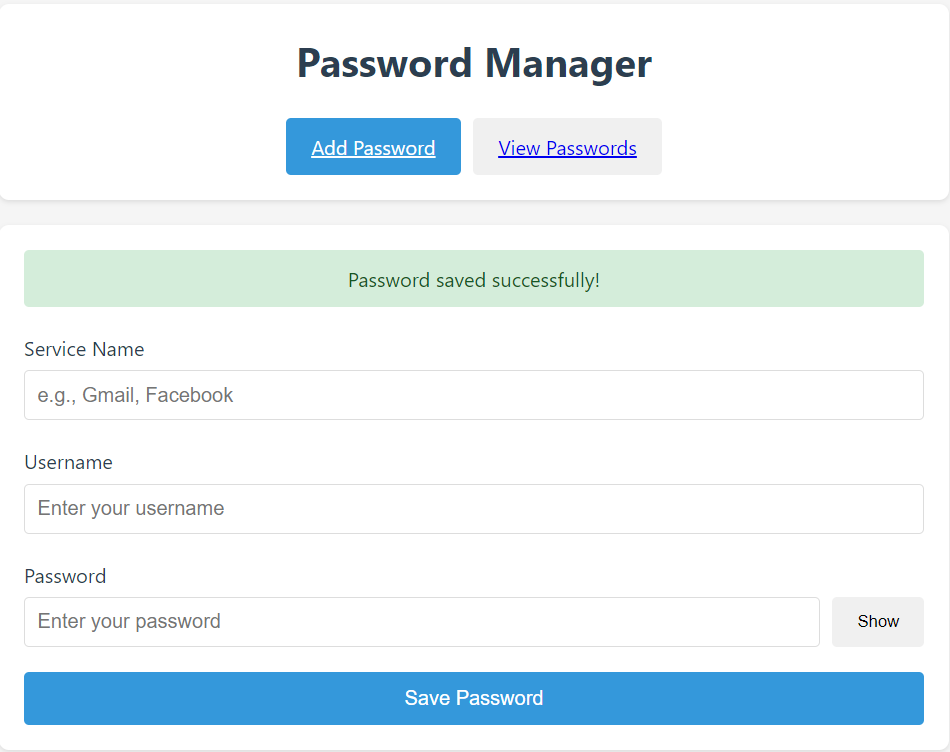
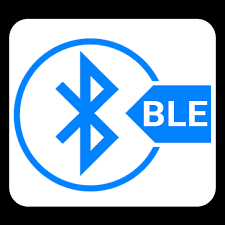
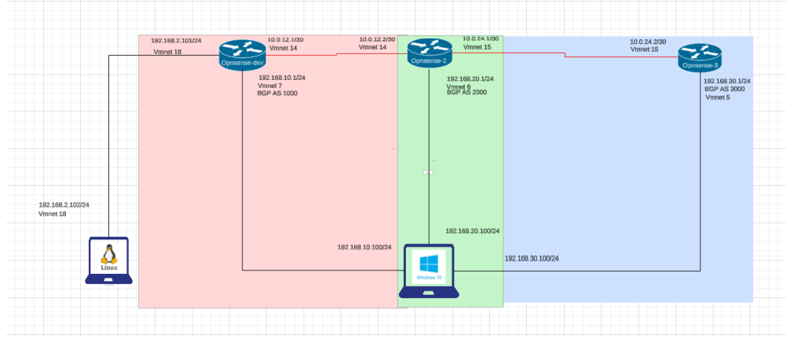
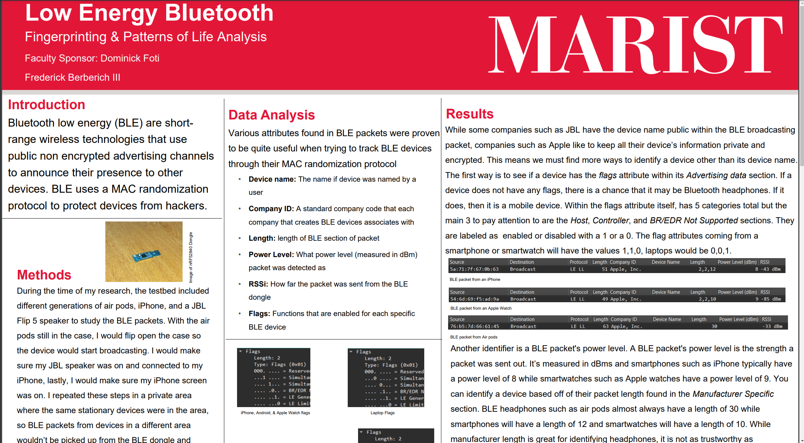

Machine Learning Research
Mac malware detection and model refinement work.
Project Portfolio
Mac malware detection and model refinement work.

Automated data collection and analysis workflows.

Secure credential management with an easy interface.

Security-focused BLE research and documentation.

Domain and endpoint configuration in a virtual lab.

BGP implementation across VMware network segments.
Nmap and Metasploit work in a controlled lab setup.

Routing and troubleshooting labs published in GitHub.